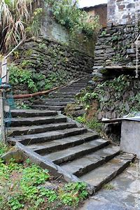

山不在高，有仙则名。水不在深，有龙则灵。斯是陋室，惟吾德馨。苔痕上阶绿，草色入帘青。 谈笑有鸿儒，往来无白丁。可以调素琴，阅金经。无丝竹之乱耳，无案牍之劳形。南阳诸葛庐，西蜀子云亭。孔子云：何陋之有？
山不在于高，有了神仙就会有名气。水不在于深，有了龙就会有灵气。这是简陋的房子，只是我品德好就感觉不到简陋了。苔痕碧绿，长到台上，草色青葱，映入帘里。到这里谈笑的都是博学之人，交往的没有知识浅薄之人，可以弹奏不加装饰的琴，阅读佛经。没有弦管奏乐的声音扰乱耳朵，没有官府的公文使身体劳累。南阳有诸葛亮的草庐，西蜀有扬子云的亭子。孔子说：这有什么简陋的呢？
陋室：简陋的屋子。铭：古代刻在器物上用来警戒自己或称述功德的文字，叫“铭”，后来就成为一种文体。这种文体一般都是用骈句，句式较为整齐，朗朗上口。
在：在于，动词。
名：出名，著名，名词用作动词。
灵（líng）：名词作动词，显得有灵气。
斯是陋室（lòu shì）：这是简陋的屋子。
斯：指示代词，此，这。
是：表肯定的判断动词。陋室：简陋的屋子，这里指作者自己的屋子。
惟吾德馨（xīn）：只是因为我品德高尚就感觉不到简陋了。
惟：只。吾：我，这里是指（陋室铭）的铭文。
馨：散布很远的香气，这里指（品德）高尚。《尚书·君陈》：“黍稷非馨，明德惟馨。”。
苔痕上阶绿，草色入帘青：苔痕蔓延到台阶上，使台阶都绿了；草色映入竹帘，使室内染上青色。
上：长到；
入：映入。
鸿儒（hóng rú）：大儒，这里指博学的人。
鸿：同“洪”，大。儒，旧指读书人。
白丁：平民。这里指没有什么学问的人。
调（tiáo）素琴：弹奏不加装饰的琴。
调：调弄，这里指弹（琴）。素琴：不加装饰的琴。
金经：现今学术界仍存在争议，有学者认为是指佛经（《金刚经》），也有人认为是装饰精美的经典（《四书五经》），但就江苏教育出版社的语文书则指的是佛经（《金刚经》）而安徽考察则是后者。
金：珍贵的。金者贵义，是珍贵的意思，儒释道的经典都可以说是金经。
丝竹：琴瑟、箫管等乐器的总称，“丝”指弦乐器，“竹”指管乐器。这里指奏乐的声音。
之：语气助词，的。用在主谓间，取消句子的独立性。
乱耳：扰乱双耳。
乱：形容词的使动用法，使……乱，扰乱。
案牍（dú）：（官府的）公文，文书。
劳形：使身体劳累（“使”动用法）。
劳：形容词的使动用法，使……劳累。形：形体、身体。
南阳：地名，今河南省南阳市。诸葛亮在出山之前，曾在南阳卧龙岗中隐居躬耕。
诸葛亮，字孔明，三国时蜀汉丞相，著名的政治家和军事家，出仕前曾隐居南阳卧龙岗中。
扬雄：字子云，西汉时文学家，蜀郡成都人。
庐：简陋的小屋子。
孔子云：孔子说，云在文言文中一般都指说。
何陋之有：即“有何之陋”，属于宾语前置。之，助词，表示强烈的反问，宾语前置的标志，不译。
谈笑有鸿儒：谈笑间都是学识渊博的人。
鸿：大。